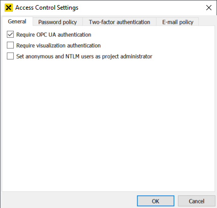
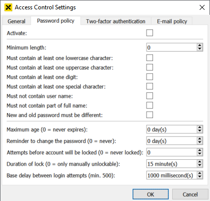
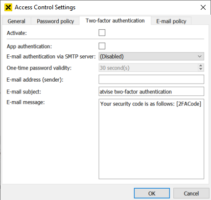
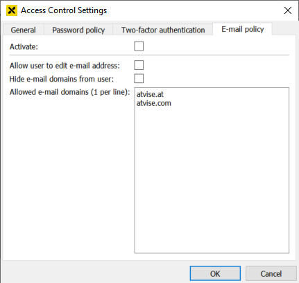
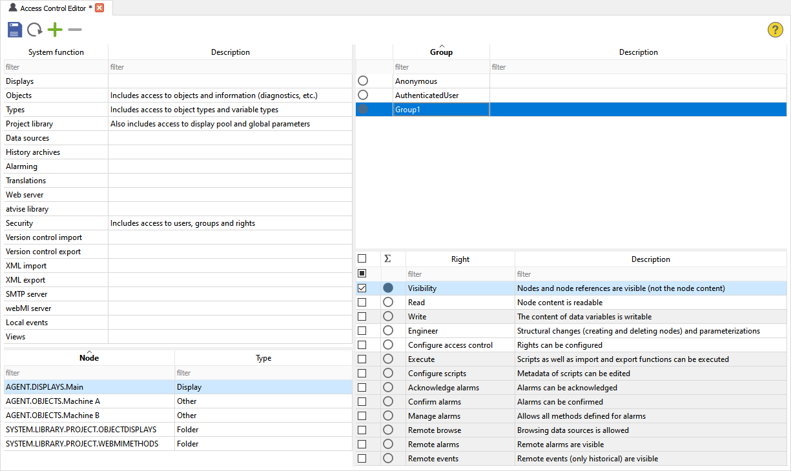

Access Control
Settings…
General settings for the project can be configured via .
Hint
This menu can only be opened by users with the Engineering right for the "SYSTEM.SECURITY" node.
General

Require OPC UA authentication – Defines if OPC UA clients (e.g. atvise builder) must log on to the server.
Require visualization authentication – Defines if a login is mandatory when opening the visualization in a web browser.
Set anonymous and NTLM users as project administrator – This option allows to set project administrator rights for anonymous sessions and NTLM users (see also Using NTLM - Access control). This is necessary e.g. for old (upgraded) projects, where anonymous access shall be possible.
Password policy
Allows to set the rules that users must meet when creating and using passwords.

Activate – Activates the password policy specified below. It is possible to suspend the password policy for specific users (see user management). The user root is always excluded from the policy.
Minimum length
Must contain at least one lowercase character
Must contain at least one uppercase character
Must contain at least one digit
Must contain at least one special character – Valid special characters:
Blanks (not allowed at the beginning or end)
!"#$%&'()*+,-./:;<=>?@[]^_`{|}~
Must not contain user name – Not case-sensitive. If the user name is shorter than three characters, it is not checked. However, the user name and password must never be the same.
Must not contain part of full name – Not case-sensitive. The full name is checked for delimiters (= the valid special characters as well as the tabulator character) and is split into parts divided by each delimiter. The password must not contain any of the separate parts. Parts that are shorter than three characters are not checked.
New and old password must be different
Maximum age (0 = never expires) – The password must be changed after the defined number of days. If the password expires, a login to the builder is not possible. In this case, a project administrator must extend the expiration date of the password. If the user attempts to log in to the visualization, a dialog prompts the user to change the password.
Reminder to change the password (0 = never) – Enables a reminder x days before the password expires.
Attempts before account will be locked ( 0 = never locked) – The number of wrong login attempts before the user will be locked.
Duration of lock (0 = only manually unlockable) – Defines how long a user will be locked after the maximum number of wrong attempts. 0 means that the user will be locked permanently. In this case, the administrator has to unlock the user manually (see user management).
Base delay between login attempts (min. 500) – Defines the delay time between login attempts.
Hint
Leading or trailing blanks are never allowed, even if the password policy is disabled.
The Base delay between login attempts is always active to mitigate brute force attacks.
Two-factor authentication
Two-factor authentication allows to implement another security layer to user accounts. After logging in with username and password, the user must provide a one-time password. One-time passwords are six-digit authentication codes, that are valid only for a short period of time and must be sent to the user per mail or generated with an authenticator app.

Activate – Activates the two-factor authentication specified below. It is possible to suspend the two-factor authentication for specific users (see user management). The user root is always excluded from the policy.
App authentication – Enables or disables the authentication via authenticator app.
E-mail authentication via SMTP server – Selecting any already created SMTP server enables the authentication via mail. If the entry (Disabled) is selected, e-mail authentication is disabled.
One-time password validity – The time period that one-time passwords are valid. The default of 30 seconds cannot be changed currently, since most authenticator apps do not allow to edit the validity time.
E-mail address (sender) – The e-mail address that sends the one-time password to the user. The e-mail address must be accepted by the selected SMTP server.
E-mail subject – The subject of the e-mail that contains the one-time password.
E-mail message – Allows to edit the message that is sent to the user. The placeholder [2FACode] must be used to insert the generated one-time password.
Hint
If authentication via e-mail and app are both enabled, the user must authenticate via mail after the first login. After that, the QR code in the user editor can be scanned to use authenticator apps as well.
E-mail policy

Activate – Activates the e-mail policy specified below. It is possible to suspend the e-mail policy for specific users (see user management). The user root is always excluded from the policy.
Allow user to edit e-mail address – Defines if users are allowed to edit their own e-mail address in the user editor or during the login procedure (if necessary).
Hide e-mail domains from user – Defines if the given whitelist is visible for users when entering an e-mail address. If visible, the local-part of the e-mail address must be entered in a text field and the domain must be selected via a combobox.
Allowed e-mail domains (1 per line) – Allows to define a whitelist of permitted e-mail domains that the user can enter. Each domain must be entered in a separate line without any separators.
Access control editor
The access control editor is opened via and allows to define access rights for all nodes.

Access control editor
Hint
Regular expression patterns can be used to filter nodes, groups and rights in the respective table. Refer to the Global Search chapter for more information on regular expressions.
The workflow for using the editor is as follows:
1. Nodes
Select the respective node for defining rights. The editor distinguishes between predefined (system functions) and user-defined nodes.
System functions
Atvise provides the following predefined nodes or subtrees of the address space for an easy configuration of the most common functions. The following table shows which rights can be defined for the respective nodes or subnodes.
System functions |
NodeId(s) |
Possible rights |
Subnodes |
|---|---|---|---|
Displays |
AGENT.DISPLAYS |
Visibility, Read, Engineer, Configure access control |
All |
Objects |
AGENT.OBJECTS, SYSTEM.INFORMATION |
Visibility, Read, Write, Engineer, Configure scripts, Configure access control, Acknowledge alarms, Confirm alarms, Manage alarms Caution: "Write" only gives permission to write normal process variables, not parameterizations (e.g. MirrorOutput added to a variable). Parameterization includes all nodes that are instances of ObjectTypes.ATVISE and VariableTypes.ATVISE. |
All |
Types |
ObjectTypes.PROJECT, VariableTypes.PROJECT |
Visibility, Read, Engineer, Configure scripts |
All, however only the rights Visibility, Read, Write, Configure access control, Acknowledge alarms, Confirm alarms and Manage alarms are valid for subnodes. Caution: Rights defined for subnodes are only applied to instances but not the type itself. |
Project library |
SYSTEM.LIBRARY.PROJECT, SYSTEM.GLOBALS, SYSTEM.DISPLAYS |
Visibility, Read, Engineer, Execute, Configure scripts, Configure access control |
All |
Data sources |
AGENT.DATASOURCES |
Visibility, Read, Engineer, Acknowledge alarms, Confirm alarms, Manage alarms, Remote browse, Remote alarms, Remote events |
Only the first level (data sources themselves) |
History archives |
AGENT.HISTORY |
Visibility, Read, Engineer |
Only first level of AGENT.HISTORY (archive groups) and first level of AGENT.HISTORY.AGGREGATETEMPLATES |
Alarming |
AGENT.ALARMING |
Visibility, Read, Engineer |
|
Translations |
SYSTEM.TRANSLATIONS |
Visibility, Read, Engineer |
Only first level |
Web server |
AGENT.WEBACCESS |
Visibility, Read, Engineer |
Only first level |
atvise library |
SYSTEM.LIBRARY.ATVISE |
Visibility, Read, Engineer, Execute, Configure scripts, Configure access control |
All |
Security |
SYSTEM.SECURITY |
Engineer (=full access to all nodes below SYSTEM.SECURITY, i.e. users, groups and visualization rights) |
None |
Version control import |
AGENT.OPCUA.METHODS.versionControlImport |
Execute |
None |
Version control export |
AGENT.OPCUA.METHODS.versionControlExport |
Execute |
None |
XML Import |
AGENT.OPCUA.METHODS.importNodes |
Execute |
None |
XML export |
AGENT.OPCUA.METHODS.exportNodes |
Execute |
None |
SMTP server |
AGENT.SMTPSERVERS |
Visibility, Read, Engineer |
Only first level |
webMI server |
i=85 (ObjectsFolder) |
Visibility, Read, Engineer (=creating/changing/deleting webMI servers, calling all methods (acquire, distribute, reload external files), Read for all nodes below AGENT.GENERATOR (necessary for UA method progress), modifying displays of the webMI server) |
Only first level (webMI server itself) |
Views |
i=87 (Views) |
Visibility, Read, Engineer |
All levels |
Redundancy (if licensed) |
AGENT.REDUNDANCY |
Visibility, Read, Write (change settings in AGENT.REDUNDANCY.CONFIG), Execute (change preferred server, toggle between split and redundancy mode, trigger synchronization, change user-defined vitality status) |
None |
User-defined nodes
New nodes can be added from the address space via drag & drop or the node selector by clicking the "+" button. The node selector shows all nodes respectively sub trees for which the user has the Visibility right. However, the user can only add those nodes for which the Configure access control right is available. After adding a node, the "Type" column shows the respective type like data variable, script, etc. The "-" button can be used to remove nodes from the editor.
Hint
The table shows only nodes that were explicitly added and configured. I.e. if you configure rights for a type and create instances of this type afterwards, the instances will not be displayed here.
2. Groups
Pick one of the available groups after selecting the node for configuring rights.
3. Rights
After selecting a node as well as a group, the appropriate rights for users of the selected group can be defined here. The following rights are available:
Visibility - The user is able to see nodes but not the content. This right is necessary for the node that shall be browsed. The browse result contains only (sub) nodes where Visibility is configured.
Read - The user can read node content. This right includes
the Visibility right
reading and subscribing to the current value
reading archived raw data and archived aggregated values
viewing live and archived alarms
Write - The user can change node content. This right includes
the Read right
writing the current value
writing data to archives by script (history.write)
post-aggregation (history.aggregate)
Engineer - The user can implement structural changes. This right includes
the Write right
creating and deleting nodes and references
parameterizations (e.g. assign archive groups, modify mirroring or smoothing)
Configure access control - The user can configure access control. This right includes the Engineer right
Execute - The user can execute scripts. This does not apply to UA methods, since they are either handled by system functions or they are alarm methods with separate rights.
Configure scripts - The user can change the script metadata (owner, runcontext) as well as code of scripts where the system is the owner (i.e. root or no <owner> tag). In order to edit the code of other scripts, the Engineer right is necessary in addition.
Acknowledge alarms - The user can acknowledge alarms.
Confirm alarms - The user can confirm alarms.
Manage alarms - All methods defined for alarms are allowed. This right also includes the rights Acknowledge alarms and Confirm alarms.
Remote browse - Only for data sources: Browse
Remote alarms - Only for data sources: Remote alarms are visible
Remote events - Only for data sources: Remote events are visible (only historical events)
Hint
The filter checkbox allows to define which rights shall be displayed (selected , non-selected , all ).
Edit Current User…
Opens the user management for the current user.